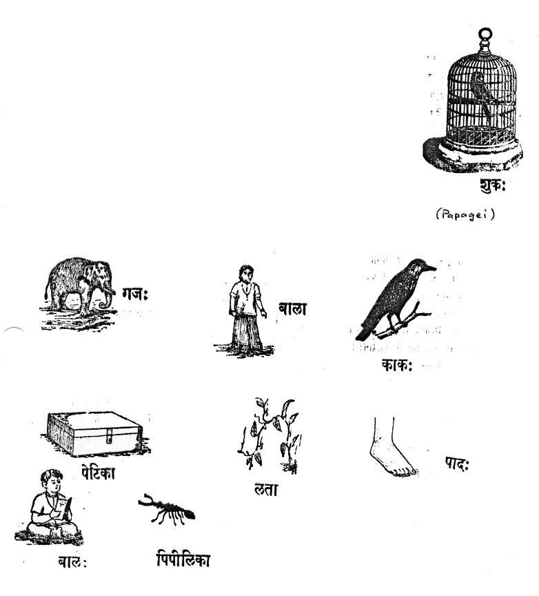

mailto:payer@payer.de
Zitierweise | cite as:
Payer, Alois <1944 - >: Sanskritkurs. -- 4. Lektion 4. -- Fassung vom 2010-03-01. -- URL: http://www.payer.de/sanskritkurs/lektion04.htm
Erstmals hier publiziert: 2008-11-17
Überarbeitungen: 2010-03-01 [Verbesserungen] ; 2008-11-24 [Ergänzungen]
Anlass: Lehrveranstaltungen 1980 - 1984
©opyright: Dieser Text steht der Allgemeinheit zur Verfügung. Eine Verwertung in Publikationen, die über übliche Zitate hinausgeht, bedarf der ausdrücklichen Genehmigung des Verfassers
Dieser Text ist Teil der Abteilung Sanskrit von Tüpfli's Global Village Library
Falls Sie die diakritischen Zeichen nicht dargestellt bekommen, installieren Sie eine Schrift mit Diakritika wie z.B. Tahoma.
Die Devanāgarī-Zeichen sind in Unicode kodiert. Sie benötigen also eine Unicode-Devanāgarī-Schrift.
Gesprochenes Sanskrit
| Nominativ singular | Nominativ plural | |
| Neutrum | kim = किम् | kāni = कानि |
| Maskulinum | kas = कस् | ke = के |
| Feminimum | kā = का | kās = कास् |
|
Stämme |
|||
| tad = तद् "er, sie, es; der, die, das" (Erwähnte) | etad = एतद् "dieser, diese, dieses" (dem Sprechenden sehr Nahe) | idam = इदम् "dieser, diese, dieses" (Nahe) | |
|
Nominativ singular |
|||
| Neutrum | tad = तद् | etad = एतद् | idam = इदम् |
| Maskulinum | sa, so saḥ = स सो सः | eṣa, eṣo, eṣaḥ = एष एषो एषः | ayam = अयम् |
| Femininum | sā = सा | eṣā = एषा | iyam = इयम् |
|
Nominativ plural |
|||
| Neutrum | tāni = तानि | etāni = एतानि | imāni = इमानि |
| Maskulinum | te = ते | ete = एते | ime = इमे |
| Femininum | tās = तास् | etās = एतास् | imās इमास् |
Zum Nom. sg. mask.:
Um mit diesen Pronomina (sarvanāman n.) Sätze bilden zu können, ist noch die Kenntnis folgender Sandhiregeln nötig:
| Auslautendes -m wird vor Konsonanten durch Anusvāra (-ṃ) ersetzt. Am Satz- bzw. Versende und vor Vokalen bleibt -m erhalten. |
|
| Auslautendes -d wird in Pausa sowie vor
stimmlosen Gutturalen (k, kh) und Labialen (p, ph) durch -t ersetzt. Die Ersetzung vor anderen Konsonanten wird später besprochen. Vermeiden Sie vorläufig solche Lautzusammenstöße! |
Mittels dieser Pronomina bildet man z.B. folgende
| Singular | Neutrum | tat kim? /kiṃ tat? तत्किम्, किं तत्
etat kim? /kim
etat? idaṃ kim? / kim idam |
"Was ist das?" |
| Maskulinum | sa kaḥ? / kaḥ saḥ? स कः, कः सः
eṣa kaḥ? / ka eṣaḥ ayaṃ kaḥ? / ko 'yam? |
"Wer ist das?" "Was ist der? |
|
| Femininum | sā kā? / kā sā? सा का, का सा
eṣā kā? / kaiṣā? (= kā +
eṣā) iyaṃ kā? keyam? (= kā + iyam) |
"Wer ist das?" "Wer ist die?" |
|
| Plural | Neutrum | tāni kāni? / kāni tāni? तानि कानि, कानि तानि
etāni kāni? / kāny
etāni? imāni kāni? / kānīmāni? (= kāni + imāni) |
|
| Maskulinum | te ke? / ke te? ते के, के ते
ete ke? ka ete? ime ke? / ka ime? |
||
| Femininum | tāḥ kāh? / kās tāḥ? ताः काः, कास्ताः
etāḥ kāḥ? / kā etāḥ? imāḥ kāḥ? / kā imāḥ? |
Ein Beispiel anderer Fragen:
viṣṇuḥ kaḥ? = विष्णुः कः Antwort: viṣṇur īśvaraḥ = विष्णुरीश्वरः. (Hier kann man im Nominalsatz das Subjekt z.B.an den Anfang stellen, um den Anschluss an die Frage zu betonen.)
ANMERKUNG: Die Antworten, die Sie mit Ihren bisherigen Sanskritkenntnissen auf solche Fragen geben können, entsprechen selbstverständlich noch nicht in jeder Hinsicht idiomatisch gutem Sanskrit.
A) Bilden Sie mündlich mit folgenden Wörtern Fragen nach dem Schema viṣṇuḥ kaḥ (विष्णुः कः) und beantworten Sie die Fragen auf Sanskrit:
śruti, śiva, brāhmaṇa, dvija (plural), indrāṇī, dhenu, tulādhara, kālidāsa
= श्रुति, शिव, ब्राह्मण, द्विज (बहुवचनम्), इन्द्राणी, धेनु, तुलाधर, कालिदास
B) Bilden Sie zur folgenden Leseübung Fragen nach dem Muster etat kim (एतत्किम्) und beantworten Sie die Fragen mit den angegebenen Wörtern und Demonstrativpronomen z.B. eṣa bālaḥ (एष बालः):

Zu Lektion 5